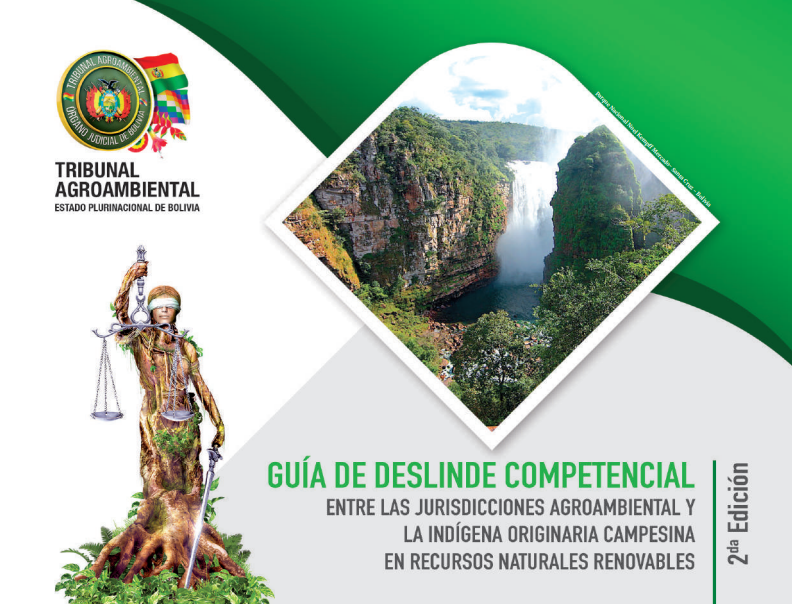

𝐏𝐑𝐄𝐒𝐈𝐃𝐄𝐍𝐓𝐄 𝐃𝐄𝐋 𝐓𝐑𝐈𝐁𝐔𝐍𝐀𝐋 𝐀𝐆𝐑𝐎𝐀𝐌𝐁𝐈𝐄𝐍𝐓𝐀𝐋 𝐃𝐄𝐒𝐓𝐀𝐂𝐀 𝐄𝐋 𝐓𝐑𝐀𝐁𝐀𝐉𝐎 𝐃𝐄 𝐋𝐎𝐒 𝐉𝐔𝐄𝐂𝐄𝐒 𝐀𝐆𝐑𝐎𝐀𝐌𝐁𝐈𝐄𝐍𝐓𝐀𝐋𝐄𝐒 𝐘 𝐄𝐗𝐇𝐎𝐑𝐓𝐀 𝐏𝐑𝐎𝐅𝐔𝐍𝐃𝐈𝐙𝐀𝐑 𝐋𝐀 𝐂𝐔𝐋𝐓𝐔𝐑𝐀 𝐃𝐄 𝐏𝐀𝐙
El Presidente del Tribunal Agroambiental, Magistrado Gregorio Aro Rasguido, al conmemorarse el Día del Juez Boliviano, destaca el trabajo de las juezas y jueces de la Jurisdicción Agroambiental y los exhorta a profundizar la cultura de paz mediante la conciliación.
EL TRIBUNAL AGROAMBIENTAL, RECIBIÓ MIL EJEMPLARES DEL LIBRO DE JURISPRUDENCIA RELEVANTE” CORRESPONDIENTE A LOS PROCESOS: CONTENCIOSO ADMINISTRATIVOS Y NULIDAD Y ANULABILIDAD DE TÍTULOS EJECUTORIALES DE LA GESTIÓN 2023
El Tribunal Agroambiental, recibió mil ejemplares del libro de Jurisprudencia Relevante” correspondiente a los procesos: Contencioso Administrativos y Nulidad y Anulabilidad de Títulos Ejecutoriales de la gestión 2023, documento que fue editado por la Unidad de Jurisprudencia de este Máximo Tribunal Especializado de la Jurisdicción Agroambiental e impreso por el Consejo de la Magistratura, mediante la Gaceta Judicial.